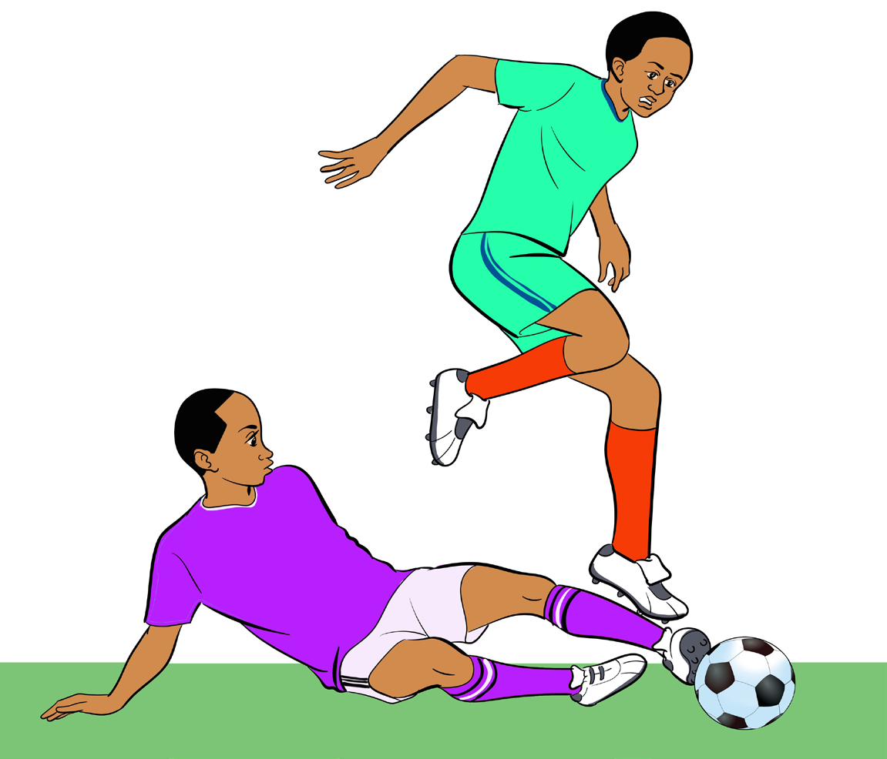

(i) Time the movement of the opponent with the ball;
(ii) Move quickly in trailing position;
(iii) Stride direct to touch the ball with your foot, as shown in Figure 4.12; and
(iv) Kick the ball away from the opponent’s possession without touching him or her
before the ball.

Figure 4.12: Tackling skill
Goalkeeping
Goalkeeping is a football technique that allows a player (goalkeeper) to use all body parts to guard the goal. The goalkeeper can touch the ball legally in a certain limited area of the field of play. To properly execute the goal keeping technique, a goalkeeper needs to develop the following skills: (a) Footwork; (d) Diving; (b) Positioning; (e) Jumping; and
(c) Handling the ball; (f) Saving.